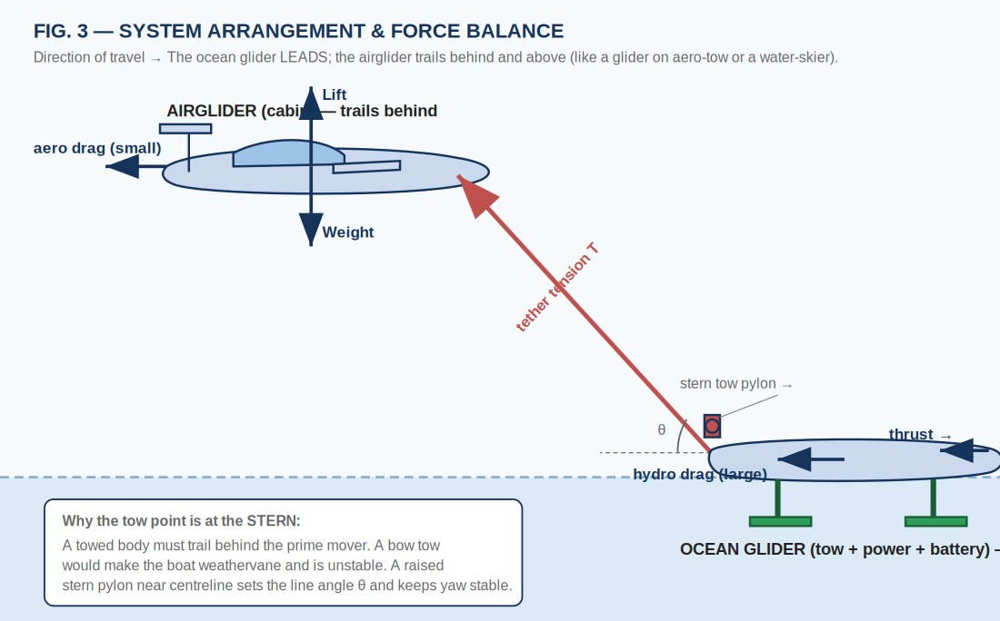
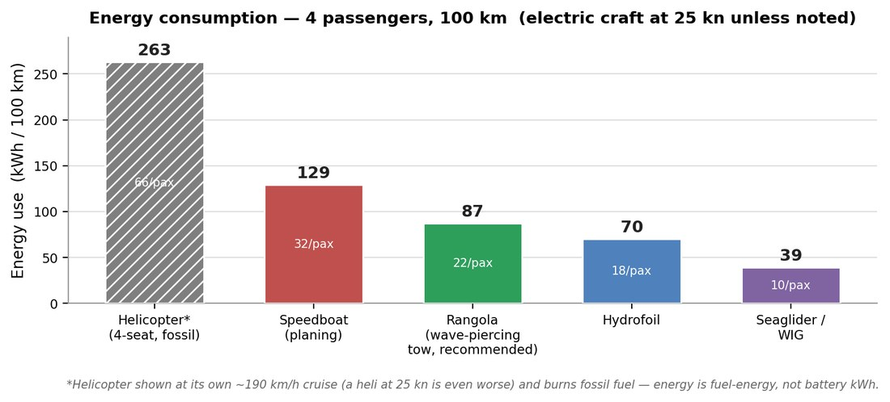
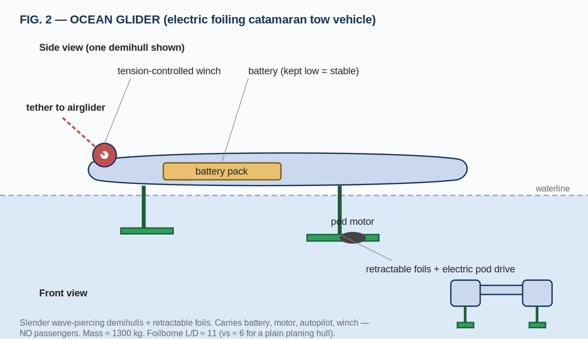
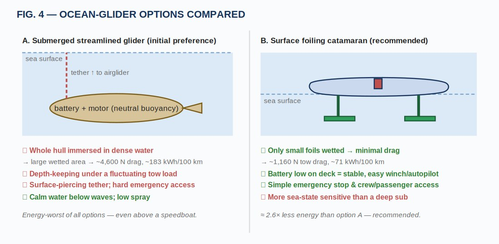
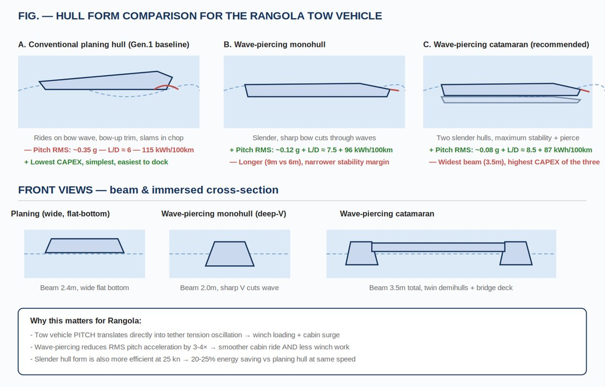
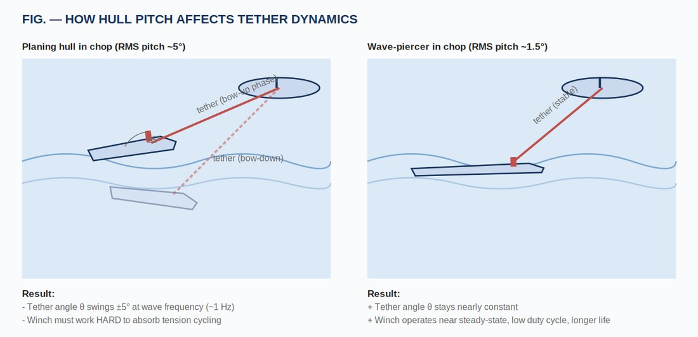

First-Order Physics | Multi-Modal Trade Study | Concept & Tow-Vehicle Selection

Rangola lifts passengers out of the water into an unpowered fixed-wing airglider, towed just above the surface by a low-drag electric ocean glider through a tension-controlled tether. All heavy hardware — battery, motor, controls — stays on the water vehicle, so the cabin is quiet, smooth, panoramic and carries no high-energy battery. This is a physics-based, first-order (back-of-the-envelope) feasibility evaluation of the concept, benchmarked against a helicopter, a planing speedboat, a hydrofoil ferry and a wing-in-ground-effect (WIG) seaglider on one consistent 25 kn / 100 km / 4-passenger basis.
The headline result is that the tow vehicle — not the airglider — dominates the design: roughly three-quarters of total system drag is hydrodynamic. The recommended configuration is an electric wave-piercing catamaran (≈ 87 kWh/100 km), which captures most of a hydrofoil's efficiency using only passive, proven naval architecture — avoiding the maintenance burden that sank the hydrofoil-ferry industry. Rangola does not win on raw energy; it wins on ride quality, simplicity, safety and zero emissions.
Pursue Rangola for experience, emissions and operational simplicity, not for record energy efficiency. It is physically sound and occupies a distinct premium-experience niche for short (10–60 km) coastal and inter-island routes — even in a world where both the WIG and the hydrofoil succeed.
Sea water is ≈ 840× denser than air, so any hull pushing through it pays a large drag penalty that limits electric range and dictates a rough ride. Rangola's answer is to put the passengers in the air and leave the machinery on the water. The ocean glider leads; the airglider trails behind and above it, exactly like a sailplane on aero-tow or a water-skier behind a boat. The link is a single tension-controlled tether running from a raised stern pylon to the airglider's nose bridle.

The ocean glider carries all thrust and takes the large hydrodynamic drag; the airglider only balances its own weight against lift and a small aero drag. The tow point sits at the stern — a bow tow would pull the boat from its front and make it weathervane (directionally unstable). The small vertical component of tether tension even off-loads a little hull weight.
Market. Short coastal and inter-island routes of 10–100 km — Mediterranean and Greek-island hops, Caribbean and Maldives resort shuttles, fjord tourism, premium airport-to-resort transfers — where a quiet, smooth, panoramic, zero-emission ride is the product rather than outright speed. The natural customer is a premium operator running fast boats or helicopters today who wants a calmer, cleaner, cheaper-to-operate alternative.
Every mode is reduced to steady cruise, where thrust balances drag and lift balances weight. Each craft's resistance is then its weight divided by an effective lift-to-drag ratio, converted to power and energy:
D = W / (L/D)eff · P = D · V · E = D · s / η
A correction the study makes early: a single blanket drivetrain efficiency is wrong, because efficiency depends on where thrust is produced. Rangola has no propeller of its own — it is towed, so it inherits the marine efficiency of whichever ocean glider pulls it (η ≈ 0.60 surface, 0.70 submerged). The η ≈ 0.80 air-propeller figure applies only to the WIG, never to Rangola.
All electric craft are compared at 25 kn / 100 km / 4 passengers. The helicopter is shown at its own efficient cruise (forcing it to 25 kn, near hover, would be worse) and burns fossil fuel, so its figure is fuel energy, not battery kWh.

Rangola (recommended wave-piercing tow) sits between the speedboat and the hydrofoil; the WIG is the energy champion and the helicopter is in a different, far costlier class. Rangola's advantage is not raw energy — it is the combination of comfort, simplicity, safety and emissions.
The worked drag build-up for the recommended configuration splits cleanly into a small aerodynamic term (the airglider) and a large hydrodynamic term (the tow vehicle):
Daero = 750·g / 20 ≈ 368 N · Dhydro = 1300·g / 8.5 ≈ 1500 N
Dtotal ≈ 1868 N ⇒ E = 1868×10⁵ / (0.60 × 3.6×10⁶) ≈ 87 kWh / 100 km
| Mode | Drag — water / air (N) | Power (kW) | kWh / 100 km | Per pax |
|---|---|---|---|---|
| Helicopter — light 4-seat† | 0 / aero | ~140 | ~263 (fuel) | ~66 |
| Speedboat — planing hull | 2 780 / 0 | 35.7 | 129 | 32 |
| Hydrofoil | 1 520 / 0 | 19.5 | 70 | 18 |
| Rangola — wave-piercing tow | 1 500 / 368 | 24.0 | 87 | 22 |
| Seaglider / WIG (REGENT-type) | 0 / 1 130 | 14.5 | 39 | 10 |
† Helicopter at ≈ 190 km/h cruise on fossil fuel; its figure is fuel energy, not battery kWh.
Water vs. air — the key structural finding. The speedboat and hydrofoil are 100% hydrodynamic; the WIG is 100% aerodynamic; Rangola is a hybrid in which ≈ 80% of resistance is still hydrodynamic (the tow vehicle) and only ≈ 20% aerodynamic (the airglider). Putting the passengers in the air removes them from the water but does not remove the water vehicle — which is why the tow vehicle dominates the entire analysis.
Honest caveat on the 25-knot basis
25 kn is slow for a wing: to lift 750 kg the airglider needs ≈ 36–60 m² of wing flying near stall. The flying modes naturally prefer ≈ 35–45 kn, where the wing shrinks and aero L/D improves — but above ≈ 45–50 kn the water propulsion and any foils cavitate, capping system speed. Rangola's real sweet spot is a narrow ~35–45 kn band; the 25-kn comparison is fair but flatters the boats.
Because ≈ 80% of Rangola's drag is hydrodynamic, the tow vehicle is the design driver. The recommendation evolved across review rounds: from submerged vs. surface, to foil vs. planing, to a final wave-piercing answer.

The tow vehicle carries the battery low for stability, a pod motor, an autopilot and a tension-controlled winch — and no passengers (mass ≈ 1 300 kg). This early sketch shows a foiling layout; the hull form was subsequently refined to a passive wave-piercing catamaran, for the reasons below.
Cruising a few metres down buys calm water, low spray and a clean propulsor (η ≈ 0.70). But the entire streamlined hull (≈ 17 m² wetted) sits in water 840× denser than air, giving ≈ 4 600 N of drag and ≈ 183 kWh/100 km — the worst electric option, above even a speedboat — while also adding depth-keeping under a fluctuating tow load and a surface-piercing tether. A surface vessel is clearly preferable.

The submerged body cruises in calm water but immerses its whole hull in dense water; a surface vessel keeps far less wetted area, using ≈ 2.6× less energy. Keeping the hull mostly out of the water is the single biggest lever.
A foiling catamaran looks best on energy alone (≈ 71 vs ≈ 115 kWh/100 km for a planing hull), but hydrofoil technology has never scaled commercially despite that advantage — active-trim foils and retraction add complexity and maintenance, submerged foils are vulnerable to floating debris, foils need a minimum speed to work, and CAPEX is 2–3× a simple hull. Crucially, Rangola neutralises the foil's main non-energy selling point: a standalone hydrofoil justifies its foil cost partly through ride smoothness because passengers sit on the hull — but in Rangola the cabin is airborne, so hull ride quality is irrelevant to comfort. That leaves only an energy advantage, which can be captured more simply.
The decisive question was whether the surface tow vehicle should use a wave-piercing profile. The answer is yes — and the reasoning rests on a mechanism unique to Rangola.

Wave-piercing forms trade beam and length for far better motion in a seaway and a small CAPEX premium. Two findings stand out: they save 17–25% energy (a slender hull avoids climbing its own bow wave) and drop RMS pitch acceleration by 3–4×.
| Metric (1 300 kg, 25 kn, incl. 368 N aero) | Planing hull | Wave-piercing monohull | Wave-piercing catamaran |
|---|---|---|---|
| Effective L/D | 6.0 | 7.5 | 8.5 |
| System drag, incl. aero (N) | 2 493 | 2 068 | 1 868 |
| Energy (kWh / 100 km) | 115 | 96 | 87 |
| Battery for 100 km @ 250 Wh/kg | 462 kg | 383 kg | 346 kg |
| RMS pitch accel. in Sea State 2 (g) | ~0.35 | ~0.12 | ~0.08 |
| Length / beam (m) | 6.0 / 2.4 | 9.0 / 2.0 | 9.0 / 3.5 |
| Tow-vehicle CAPEX (ROM) | $250–450k | $350–650k | $450–850k |

A planing hull pitching ±5° at wave frequency swings the tether angle and forces the winch to spool in/out continuously; a wave-piercer keeps the tether angle nearly constant, so the winch operates near steady-state — less wear, less cabin surge, less snatch loading.
In an ordinary boat, pitch is merely a comfort issue. In Rangola, hull pitch changes the tether angle θ, which drives tension cycling the winch must absorb. The vertical-force change is small (cos 5° − 1 ≈ −0.4%), but the rate of change is the problem: a planing hull pitching ±5° at ~1 Hz forces the tension-controlled winch to work at high duty cycle — wear, control complexity, cabin surge and fatigue (snatch loading) in the tether–pylon–winch chain. Cutting pitch RMS by 3–4× turns the winch into a near-steady-state device: a system-level reliability advantage unique to this towed architecture.
An electric wave-piercing catamaran with conventional pod propulsion, ≈ 1 300 kg, with a stern-mounted tension-controlled winch. A wave-piercing monohull is the budget alternative where dock width or trailerability is critical; the foiling catamaran is reserved as a Generation-2 upgrade for routes beyond ~150 km where battery mass dominates economics.
| Configuration | Energy (kWh / 100 km) | Tow CAPEX (ROM) | Verdict |
|---|---|---|---|
| Submerged streamlined glider | 183 | $0.8M+ | Rejected |
| Conventional planing hull | 115 | $250–450k | Baseline |
| Wave-piercing monohull | 96 | $350–650k | Budget option |
| Wave-piercing catamaran | 87 | $450–850k | ✓ Recommended |
| Foiling catamaran | 71 | $500k–1.2M | Reserved for Gen. 2 |
Comfort is where Rangola genuinely wins, and it wins by architecture, not by expensive acoustic engineering: decoupling the cabin from the surface removes wave slam and engine noise, and the elevated canopy gives a seaplane-grade view. There is simply no rigid path for engine vibration to reach the passengers.
| Factor | Speedboat | Hydrofoil | Rangola | Why |
|---|---|---|---|---|
| Ride smoothness | ★★ | ★★★ | ★★★★★ | Cabin airborne — decoupled from wave slam; residual tether surge damped by the winch. |
| Cabin noise | ★★ | ★★★ | ★★★★★ | No engine/propeller in the cabin; the only link is a flexible tether — no structure-borne noise path. |
| Motion sickness | ★★ | ★★★ | ★★★★ | Smooth ride + elevated seat + horizon reference; tether surge must be damped. |
| Scenic view | ★★ | ★★ | ★★★★★ | Elevated glider canopy — seaplane-grade panorama. |
Because the pilot rides in the airglider, the ocean glider is autonomous and slaved to the cabin — a two-body formation-control problem. Three elements make it tractable:
The winch heritage is real and proven — glider-tow winches, parasail boats, aerial-refuelling drogues, SkySails kite pods — and because the cabin is unpowered and battery-free, its emergency case is simpler than any powered craft's.
The helicopter and WIG are not close competitors on physics or economics. The helicopter is the premium incumbent — fastest and runway-free, but the energy outlier and the most expensive to run, needing a commercial pilot; it frames the top of the market Rangola undercuts. The WIG is the energy champion but a fast, certification-heavy commuter, not an experience craft. The real contest is the tow vehicle, resolved above.
| Metric | Helicopter (4-seat) | WIG Seaglider (REGENT, 12-pax) | Rangola (4-pax, estimate) |
|---|---|---|---|
| Unit CAPEX | ~$0.5–1.5M | ~$5–7M (~$0.45–0.6M/seat) | ~$0.6–1.2M (target) |
| Operating cost | ~$300–550/h direct; $500–1 500/h charter | "low four figures"/h (~$1–3k) | ~$200–600/h (energy ≈ $13/100 km) |
| Energy / 100 km | ~263 kWh (fossil) | ~39 (4-pax-equiv.) | ~87 (wave-piercing tow) |
| Crew / licence | Commercial heli pilot (CPL-H) | Maritime captain (USCG/IMO) | Glider / maritime operator |
| Cruise speed | ~190–260 km/h | ~290 km/h | ~46–80 km/h |
| Emissions | High (avgas / Jet-A) | Zero (electric) | Zero (electric) |
Two structural advantages worth calling out. First, crewing: because Rangola is unpowered and permanently tethered to a vessel, there is a credible path to classifying it like a towed maritime device (the parasail precedent) — potentially the cheapest crewing of any option, though this pathway is unproven and is itself both a key risk and a key opportunity. Second, "float the battery": a WIG must lift every kilogram of battery aerodynamically, whereas Rangola floats its battery on the ocean glider where buoyancy supports it for free — so as route length and battery mass grow, Rangola's relative position improves against any craft that must lift its own battery.
The dominant unknown is the two-body tethered dynamics and tension control. That risk can be retired cheaply before any full-scale commitment by reusing an existing foam powered glider (de-motored, with a nose bridle and telemetry added) towed from an off-the-shelf RC boat with a small tension winch.
| Item | ROM cost | Note |
|---|---|---|
| Sub-scale tethered demonstrator | $12k–$25k | Reuse foam glider + RC boat + winch + Pixhawk telemetry + ≈ 150 h engineering — build this first |
| Full-scale airglider | $0.8M–$2.0M | Composite 4-seat unpowered glider, water-landing capable, ballistic chute |
| Full-scale wave-piercing tow vehicle | $0.45M–$0.85M | Electric wave-piercing catamaran, battery, pod drive, autopilot, tension winch |
| Integration, test, safety, insurance | $0.4M–$1.0M | Two-body dynamics flight test, certification groundwork |
| Full-scale prototype TOTAL | $1.65M–$3.85M | Order-of-magnitude only |
What this study is — and is not
First-order estimates using textbook L/D ranges, assumed masses and efficiencies, and slender-body drag build-ups; expect ±25–30%. Pitch-acceleration figures are typical for the indicated sea state and depend on specific hull lines. WIG and helicopter cost and regulatory facts are publicly reported and may change. No CAD, CFD or FEA was performed, as scoped — these figures are for screening and prioritisation, not design sizing. A hull-lines design and basic seakeeping CFD would refine the tow-vehicle numbers in a follow-on phase.
✓ Project Outcomes